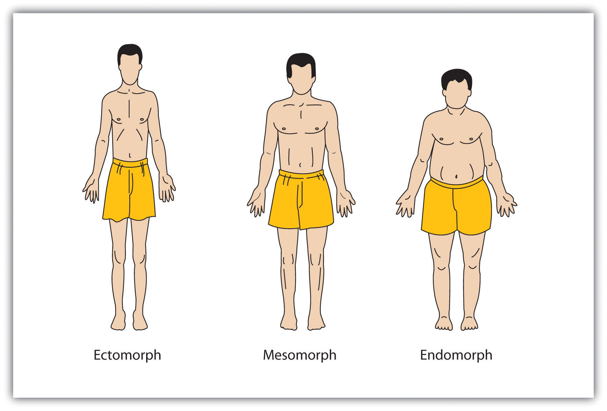
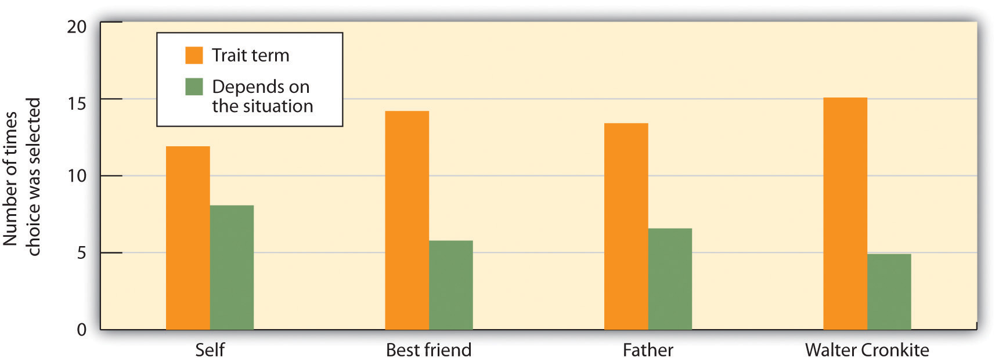
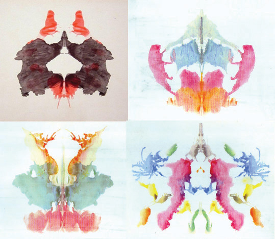
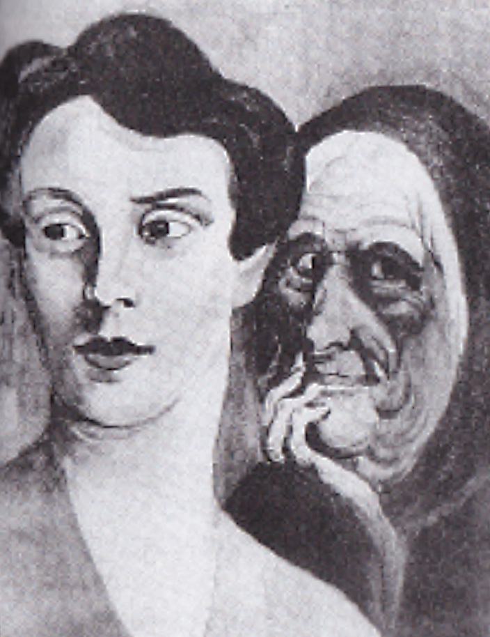
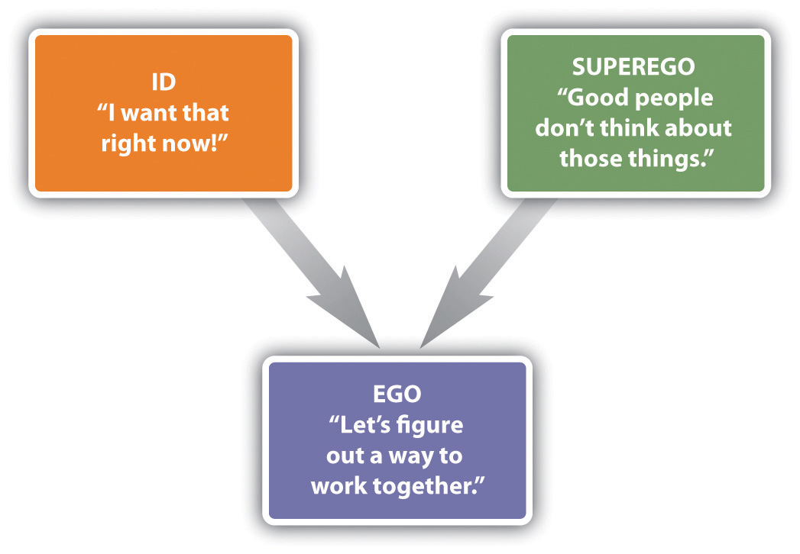

Paula Bernstein and Elyse Schein were identical twins who were adopted into separate families immediately after their births in 1968. It was only at the age of 35 that the twins were reunited and discovered how similar they were to each other.
Paula Bernstein grew up in a happy home in suburban New York. She loved her adopted parents and older brother and even wrote an article titled “Why I Don’t Want to Find My Birth Mother.” Elyse’s childhood, also a happy one, was followed by college and then film school abroad.
In 2003, 35 years after she was adopted, Elyse, acting on a whim, inquired about her biological family at the adoption agency. The response came back: “You were born on October 9, 1968, at 12:51 p.m., the younger of twin girls. You’ve got a twin sister Paula and she’s looking for you.”
“Oh my God, I’m a twin! Can you believe this? Is this really happening?” Elyse cried.
Elyse dialed Paula’s phone number: “It’s almost like I’m hearing my own voice in a recorder back at me,” she said.
“It’s funny because I feel like in a way I was talking to an old, close friend I never knew I had…we had an immediate intimacy, and yet, we didn’t know each other at all,” Paula said.
The two women met for the first time at a café for lunch and talked until the late evening.
“We had 35 years to catch up on,” said Paula. “How do you start asking somebody, ‘What have you been up to since we shared a womb together?’ Where do you start?”
With each new detail revealed, the twins learned about their remarkable similarities. They’d both gone to graduate school in film. They both loved to write, and they had both edited their high school yearbooks. They have similar taste in music.
“I think, you know, when we met it was undeniable that we were twins. Looking at this person, you are able to gaze into your own eyes and see yourself from the outside. This identical individual has the exact same DNA and is essentially your clone. We don’t have to imagine,” Paula said.
Now they finally feel like sisters.
“But it’s perhaps even closer than sisters,” Elyse said, “Because we’re also twins.”
The twins, who both now live in Brooklyn, combined their writing skills to write a book called Identical Strangers about their childhoods and their experience of discovering an identical twin in their mid-30s (Spilius, 2007; Kuntzman, 2007).Spilius, A. (2007, October 27). Identical twins reunited after 35 years. Telegraph. Retrieved from http://www.telegraph.co.uk/news/worldnews/1567542/Identical-twins-reunited-after-35-years.html; Kuntzman, G. (2007, October 6). Separated twins Paula Bernstein and Elyse Schein. The Brooklyn Paper. Retrieved from http://www.brooklynpaper.com/stories/30/39/30_39twins.html
Elyse and Paula
You can learn more about the experiences of Paula Bernstein and Elyse Schein by viewing this video.
One of the most fundamental tendencies of human beings is to size up other people. We say that Bill is fun, that Marian is adventurous, or that Frank is dishonest. When we make these statements, we mean that we believe that these people have stable individual characteristics—their personalities. PersonalityAn individual’s consistent patterns of feeling, thinking, and behaving. is defined as an individual’s consistent patterns of feeling, thinking, and behaving (John, Robins, & Pervin, 2008).John, O. P., Robins, R. W., & Pervin, L. A. (2008). Handbook of personality psychology: Theory and research (3rd ed.). New York, NY: Guilford Press.
The tendency to perceive personality is a fundamental part of human nature, and a most adaptive one. If we can draw accurate generalizations about what other people are normally like, we can predict how they will behave in the future, and this can help us determine how they are likely to respond in different situations. Understanding personality can also help us better understand psychological disorders and the negative behavioral outcomes they may produce. In short, personality matters because it guides behavior.
In this chapter we will consider the wide variety of personality traits found in human beings. We’ll consider how and when personality influences our behavior, and how well we perceive the personalities of others. We will also consider how psychologists measure personality, and the extent to which personality is caused by nature versus nurture. The fundamental goal of personality psychologists is to understand what makes people different from each other (the study of individual differences), but they also find that people who share genes (as do Paula Bernstein and Elyse Schein) have a remarkable similarity in personality.
Early theories assumed that personality was expressed in people’s physical appearance. One early approach, developed by the German physician Franz Joseph Gall (1758–1828) and known as phrenology, was based on the idea that we could measure personality by assessing the patterns of bumps on people’s skulls (Figure 11.1 "Phrenology"). In the Victorian age, phrenology was taken seriously and many people promoted its use as a source of psychological insight and self-knowledge. Machines were even developed for helping people analyze skulls (Simpson, 2005).Simpson, D. (2005). Phrenology and the neurosciences: Contributions of F. J. Gall and J. G. Spurzheim. ANZ Journal of Surgery, 75(6), 475–482. However, because careful scientific research did not validate the predictions of the theory, phrenology has now been discredited in contemporary psychology.
Figure 11.1 Phrenology

This definition of phrenology with a chart of the skull appeared in Webster’s Academic Dictionary, circa 1895.
Source: Photo courtesy of Webster’s Academic Dictionary, http://en.wikipedia.org/wiki/File:1895-Dictionary-Phrenolog.png.
Another approach, known as somatology, championed by the psychologist William Herbert Sheldon (1898–1977), was based on the idea that we could determine personality from people’s body types (Figure 11.2 "Sheldon’s Body Types"). Sheldon (1940)Sheldon, W. (1940). The varieties of human physique: An introduction to constitutional psychology. New York, NY: Harper. argued that people with more body fat and a rounder physique (“endomorphs”) were more likely to be assertive and bold, whereas thinner people (“ectomorphs”) were more likely to be introverted and intellectual. As with phrenology, scientific research did not validate the predictions of the theory, and somatology has now been discredited in contemporary psychology.
Figure 11.2 Sheldon’s Body Types
William Sheldon erroneously believed that people with different body types had different personalities.
Another approach to detecting personality is known as physiognomy, or the idea that it is possible to assess personality from facial characteristics. In contrast to phrenology and somatology, for which no research support has been found, contemporary research has found that people are able to detect some aspects of a person’s character—for instance, whether they are gay or straight and whether they are Democrats or Republicans—at above chance levels by looking only at his or her face (Rule & Ambady, 2010; Rule, Ambady, Adams, & Macrae, 2008; Rule, Ambady, & Hallett, 2009).Rule, N. O., & Ambady, N. (2010). Democrats and Republicans can be differentiated from their faces. PLoS ONE, 5(1), e8733; Rule, N. O., Ambady, N., Adams, R. B., Jr., & Macrae, C. N. (2008). Accuracy and awareness in the perception and categorization of male sexual orientation. Journal of Personality and Social Psychology, 95(5), 1019–1028; Rule, N. O., Ambady, N., & Hallett, K. C. (2009). Female sexual orientation is perceived accurately, rapidly, and automatically from the face and its features. Journal of Experimental Social Psychology, 45(6), 1245–1251.
Despite these results, the ability to detect personality from faces is not guaranteed. Olivola and Todorov (2010)Olivola, C. Y., & Todorov, A. (2010). Fooled by first impressions? Reexamining the diagnostic value of appearance-based inferences. Journal of Experimental Social Psychology, 46(2), 315–324. recently studied the ability of thousands of people to guess the personality characteristics of hundreds of thousands of faces on the website What’s My Image? (http://www.whatsmyimage.com). In contrast to the predictions of physiognomy, the researchers found that these people would have made more accurate judgments about the strangers if they had just guessed, using their expectations about what people in general are like, rather than trying to use the particular facial features of individuals to help them. It seems then that the predictions of physiognomy may also, in the end, find little empirical support.
Personalities are characterized in terms of traitsRelatively enduring characteristics that influence our behavior across many situations., which are relatively enduring characteristics that influence our behavior across many situations. Personality traits such as introversion, friendliness, conscientiousness, honesty, and helpfulness are important because they help explain consistencies in behavior.
The most popular way of measuring traits is by administering personality tests on which people self-report about their own characteristics. Psychologists have investigated hundreds of traits using the self-report approach, and this research has found many personality traits that have important implications for behavior. You can see some examples of the personality dimensions that have been studied by psychologists and their implications for behavior in Table 11.1 "Some Personality Traits That Predict Behavior", and you can try completing a trait measure at the website shown in Note 11.5 "Example of a Trait Measure".
Table 11.1 Some Personality Traits That Predict Behavior
| Trait | Description | Examples of behaviors exhibited by people who have the trait |
|---|---|---|
| Authoritarianism (Adorno, Frenkel-Brunswik, Levinson, & Sanford, 1950) | A cluster of traits including conventionalism, superstition, toughness, and exaggerated concerns with sexuality | Authoritarians are more likely to be prejudiced, to conform to leaders, and to display rigid behaviors. |
| Individualism-collectivism (Triandis, 1989) | Individualism is the tendency to focus on oneself and one’s personal goals; collectivism is the tendency to focus on one’s relations with others. | Individualists prefer to engage in behaviors that make them stand out from others, whereas collectivists prefer to engage in behaviors that emphasize their similarity to others. |
| Internal versus external locus of control (Rotter, 1966) | In comparison to those with an external locus of control, people with an internal locus of control are more likely to believe that life events are due largely to their own efforts and personal characteristics. | People with higher internal locus of control are happier, less depressed, and healthier in comparison to those with an external locus of control. |
| Need for achievement (McClelland, 1958) | The desire to make significant accomplishments by mastering skills or meeting high standards | Those high in need for achievement select tasks that are not too difficult to be sure they will succeed in them. |
| Need for cognition (Cacioppo & Petty, 1982) | The extent to which people engage in and enjoy effortful cognitive activities | People high in the need for cognition pay more attention to arguments in ads. |
| Regulatory focus (Shah, Higgins, & Friedman, 1998) | Refers to differences in the motivations that energize behavior, varying from a promotion orientation (seeking out new opportunities) to a prevention orientation (avoiding negative outcomes) | People with a promotion orientation are more motivated by goals of gaining money, whereas those with prevention orientation are more concerned about losing money. |
| Self-consciousness (Fenigstein, Sheier, & Buss, 1975) | The tendency to introspect and examine one’s inner self and feelings | People high in self-consciousness spend more time preparing their hair and makeup before they leave the house. |
| Self-esteem (Rosenberg, 1965) | High self-esteem means having a positive attitude toward oneself and one’s capabilities. | High self-esteem is associated with a variety of positive psychological and health outcomes. |
| Sensation seeking (Zuckerman, 2007) | The motivation to engage in extreme and risky behaviors | Sensation seekers are more likely to engage in risky behaviors such as extreme and risky sports, substance abuse, unsafe sex, and crime. |
Sources: Adorno, T. W., Frenkel-Brunswik, E., Levinson, D. J., & Sanford, R. N. (1950). The authoritarian personality. New York, NY: Harper; Triandis, H. (1989). The self and social behavior in differing cultural contexts. Psychological Review, 93, 506–520; Rotter, J. (1966). Generalized expectancies of internal versus external locus of control of reinforcement. Psychological Monographs, 80; McClelland, D. C. (1958). Methods of measuring human motivation. In John W. Atkinson (Ed.), Motives in fantasy, action and society. Princeton, NJ: D. Van Nostrand; Cacioppo, J. T., & Petty, R. E. (1982). The need for cognition. Journal of Personality and Social Psychology, 42, 116–131; Shah, J., Higgins, T., & Friedman, R. S. (1998). Performance incentives and means: How regulatory focus influences goal attainment. Journal of Personality and Social Psychology, 74(2), 285–293; Fenigstein, A., Scheier, M. F., & Buss, A. H. (1975). Public and private self-consciousness: Assessment and theory. Journal of Consulting and Clinical Psychology, 43, 522–527; Rosenberg, M. (1965). Society and the adolescent self-image. Princeton, NJ: Princeton University Press; Zuckerman, M. (2007). Sensation seeking and risky behavior. Washington, DC: American Psychological Association.
You can try completing a self-report measure of personality (a short form of the Five-Factor Personality Test) here. There are 120 questions and it should take you about 15–20 minutes to complete. You will receive feedback about your personality after you have finished the test.
As with intelligence tests, the utility of self-report measures of personality depends on their reliability and construct validity. Some popular measures of personality are not useful because they are unreliable or invalid. Perhaps you have heard of a personality test known as the Myers-Briggs Type Indicator (MBTI). If so, you are not alone, because the MBTI is the most widely administered personality test in the world, given millions of times a year to employees in thousands of companies. The MBTI categorizes people into one of four categories on each of four dimensions: introversion versus extraversion, sensing versus intuiting, thinking versus feeling, and judging versus perceiving.
Although completing the MBTI can be useful for helping people think about individual differences in personality, and for “breaking the ice” at meetings, the measure itself is not psychologically useful because it is not reliable or valid. People’s classifications change over time, and scores on the MBTI do not relate to other measures of personality or to behavior (Hunsley, Lee, & Wood, 2003).Hunsley, J., Lee, C. M., & Wood, J. M. (2003). Controversial and questionable assessment techniques. In S. O. Lilienfeld, S. J. Lynn, & J. M. Lohr (Eds.), Science and pseudoscience in clinical psychology (pp. 39–76). New York, NY: Guilford Press. Measures such as the MBTI remind us that it is important to scientifically and empirically test the effectiveness of personality tests by assessing their stability over time and their ability to predict behavior.
One of the challenges of the trait approach to personality is that there are so many of them; there are at least 18,000 English words that can be used to describe people (Allport & Odbert, 1936).Allport, G. W., & Odbert, H. (1936). Trait-names: A psycho-lexical study. No. 211. Princeton, NJ: Psychological Review Monographs. Thus a major goal of psychologists is to take this vast number of descriptors (many of which are very similar to each other) and to determine the underlying important or “core” traits among them (John, Angleitner, & Ostendorf, 1988).John, O. P., Angleitner, A., & Ostendorf, F. (1988). The lexical approach to personality: A historical review of trait taxonomic research. European Journal of Personality, 2(3), 171–203.
The trait approach to personality was pioneered by early psychologists, including Gordon Allport (1897–1967), Raymond Cattell (1905–1998), and Hans Eysenck (1916–1997). Each of these psychologists believed in the idea of the trait as the stable unit of personality, and each attempted to provide a list or taxonomy of the most important trait dimensions. Their approach was to provide people with a self-report measure and then to use statistical analyses to look for the underlying “factors” or “clusters” of traits, according to the frequency and the co-occurrence of traits in the respondents.
Allport (1937)Allport, G. W. (1937). Personality: A psychological interpretation. New York, NY: Holt, Rinehart, & Winston. began his work by reducing the 18,000 traits to a set of about 4,500 traitlike words that he organized into three levels according to their importance. He called them “cardinal traits” (the most important traits), “central traits” (the basic and most useful traits), and “secondary traits” (the less obvious and less consistent ones). Cattell (1990)Cattell, R. B. (1990). Advances in Cattellian personality theory. In L. A. Pervin (Ed.), Handbook of personality: Theory and research (pp. 101–110). New York, NY: Guilford Press. used a statistical procedure known as factor analysis to analyze the correlations among traits and to identify the most important ones. On the basis of his research he identified what he referred to as “source” (more important) and “surface” (less important) traits, and he developed a measure that assessed 16 dimensions of traits based on personality adjectives taken from everyday language.
Hans Eysenck was particularly interested in the biological and genetic origins of personality and made an important contribution to understanding the nature of a fundamental personality trait: extraversion versus introversion (Eysenck, 1998).Eysenck, H. (1998). Dimensions of personality. Piscataway, NJ: Transaction. Eysenck proposed that people who are extroverted (i.e., who enjoy socializing with others) have lower levels of naturally occurring arousal than do introverts (who are less likely to enjoy being with others). Eysenck argued that extroverts have a greater desire to socialize with others to increase their arousal level, which is naturally too low, whereas introverts, who have naturally high arousal, do not desire to engage in social activities because they are overly stimulating.
The fundamental work on trait dimensions conducted by Allport, Cattell, Eysenck, and many others has led to contemporary trait models, the most important and well-validated of which is the Five-Factor (Big Five) Model of PersonalityThe idea that there are five fundamental underlying trait dimensions that are stable across time, cross-culturally shared, and explain a substantial proportion of behavior.. According to this model, there are five fundamental underlying trait dimensions that are stable across time, cross-culturally shared, and explain a substantial proportion of behavior (Costa & McCrae, 1992; Goldberg, 1982).Costa, P. T., Jr., & McCrae, R. R. (1992). Revised NEO Personality Inventory (NEO-PI-R) and NEO Five-Factor Inventory (NEO-FFI) manual. Odessa, FL: Psychological Assessment Resources; Goldberg, L. R. (1982). From ace to zombie: Some explorations in the language of personality. In C. D. Spielberger & J. N. Butcher (Eds.), Advances in personality assessment (Vol. 1). Hillsdale, NJ: Lawrence Erlbaum Associates. As you can see in Table 11.2 "The Five Factors of the Five-Factor Model of Personality", the five dimensions (sometimes known as the “Big Five”) are agreeableness, conscientiousness, extraversion, neuroticism, and openness to experience. (You can remember them using the watery acronyms CANOE or OCEAN.)
Table 11.2 The Five Factors of the Five-Factor Model of Personality
| Dimension | Sample items | Description | Examples of behaviors predicted by the trait |
|---|---|---|---|
| Openness to experience | “I have a vivid imagination”; “I have a rich vocabulary”; “I have excellent ideas.” | A general appreciation for art, emotion, adventure, unusual ideas, imagination, curiosity, and variety of experience | Individuals who are highly open to experience tend to have distinctive and unconventional decorations in their home. They are also likely to have books on a wide variety of topics, a diverse music collection, and works of art on display. |
| Conscientiousness | “I am always prepared”; “I am exacting in my work”; “I follow a schedule.” | A tendency to show self-discipline, act dutifully, and aim for achievement | Individuals who are conscientious have a preference for planned rather than spontaneous behavior. |
| Extraversion | “I am the life of the party”; “I feel comfortable around people”; “I talk to a lot of different people at parties.” | The tendency to experience positive emotions and to seek out stimulation and the company of others | Extroverts enjoy being with people. In groups they like to talk, assert themselves, and draw attention to themselves. |
| Agreeableness | “I am interested in people”; “I feel others’ emotions”; “I make people feel at ease.” | A tendency to be compassionate and cooperative rather than suspicious and antagonistic toward others; reflects individual differences in general concern for social harmony | Agreeable individuals value getting along with others. They are generally considerate, friendly, generous, helpful, and willing to compromise their interests with those of others. |
| Neuroticism | “I am not usually relaxed”; “I get upset easily”; “I am easily disturbed” | The tendency to experience negative emotions, such as anger, anxiety, or depression; sometimes called “emotional instability” | Those who score high in neuroticism are more likely to interpret ordinary situations as threatening and minor frustrations as hopelessly difficult. They may have trouble thinking clearly, making decisions, and coping effectively with stress. |
A large body of research evidence has supported the five-factor model. The Big Five dimensions seem to be cross-cultural, because the same five factors have been identified in participants in China, Japan, Italy, Hungary, Turkey, and many other countries (Triandis & Suh, 2002).Triandis, H. C., & Suh, E. M. (2002). Cultural influences on personality. Annual Review of Psychology, 53(1), 133–160. The Big Five dimensions also accurately predict behavior. For instance, a pattern of high conscientiousness, low neuroticism, and high agreeableness predicts successful job performance (Tett, Jackson, & Rothstein, 1991).Tett, R. P., Jackson, D. N., & Rothstein, M. (1991). Personality measures as predictors of job performance: A meta-analytic review. Personnel Psychology, 44(4), 703–742. Scores on the Big Five dimensions also predict the performance of U.S. presidents; ratings of openness to experience are correlated positively with ratings of presidential success, whereas ratings of agreeableness are correlated negatively with success (Rubenzer, Faschingbauer, & Ones, 2000).Rubenzer, S. J., Faschingbauer, T. R., & Ones, D. S. (2000). Assessing the U.S. presidents using the revised NEO Personality Inventory. Assessment, 7(4), 403–420. The Big Five factors are also increasingly being used in helping researchers understand the dimensions of psychological disorders such as anxiety and depression (Oldham, 2010; Saulsman & Page, 2004).Oldham, J. (2010). Borderline personality disorder and DSM-5. Journal of Psychiatric Practice, 16(3), 143–154; Saulsman, L. M., & Page, A. C. (2004). The five-factor model and personality disorder empirical literature: A meta-analytic review. Clinical Psychology Review, 23, 1055–1085.
An advantage of the five-factor approach is that it is parsimonious. Rather than studying hundreds of traits, researchers can focus on only five underlying dimensions. The Big Five may also capture other dimensions that have been of interest to psychologists. For instance, the trait dimension of need for achievement relates to the Big Five variable of conscientiousness, and self-esteem relates to low neuroticism. On the other hand, the Big Five factors do not seem to capture all the important dimensions of personality. For instance, the Big Five does not capture moral behavior, although this variable is important in many theories of personality. And there is evidence that the Big Five factors are not exactly the same across all cultures (Cheung & Leung, 1998).Cheung, F. M., & Leung, K. (1998). Indigenous personality measures: Chinese examples. Journal of Cross-Cultural Psychology, 29(1), 233–248.
One challenge to the trait approach to personality is that traits may not be as stable as we think they are. When we say that Malik is friendly, we mean that Malik is friendly today and will be friendly tomorrow and even next week. And we mean that Malik is friendlier than average in all situations. But what if Malik were found to behave in a friendly way with his family members but to be unfriendly with his fellow classmates? This would clash with the idea that traits are stable across time and situation.
The psychologist Walter Mischel (1968)Mischel, W. (1968). Personality and assessment. New York, NY: John Wiley & Sons. reviewed the existing literature on traits and found that there was only a relatively low correlation (about r = .30) between the traits that a person expressed in one situation and those that they expressed in other situations. In one relevant study, Hartshorne, May, Maller, & Shuttleworth (1928)Hartshorne, H., May, M. A., Maller, J. B., Shuttleworth, F. K. (1928). Studies in the nature of character. New York, NY: Macmillan. examined the correlations among various behavioral indicators of honesty in children. They also enticed children to behave either honestly or dishonestly in different situations, for instance, by making it easy or difficult for them to steal and cheat. The correlations among children’s behavior was low, generally less than r = .30, showing that children who steal in one situation are not always the same children who steal in a different situation. And similar low correlations were found in adults on other measures, including dependency, friendliness, and conscientiousness (Bem & Allen, 1974).Bem, D. J., & Allen, A. (1974). On predicting some of the people some of the time: The search for cross-situational consistencies in behavior. Psychological Review, 81(6), 506–520.
Psychologists have proposed two possibilities for these low correlations. One possibility is that the natural tendency for people to see traits in others leads us to believe that people have stable personalities when they really do not. In short, perhaps traits are more in the heads of the people who are doing the judging than they are in the behaviors of the people being observed. The fact that people tend to use human personality traits, such as the Big Five, to judge animals in the same way that they use these traits to judge humans is consistent with this idea (Gosling, 2001).Gosling, S. D. (2001). From mice to men: What can we learn about personality from animal research? Psychological Bulletin, 127(1), 45–86. And this idea also fits with research showing that people use their knowledge representation (schemas) about people to help them interpret the world around them and that these schemas color their judgments of others’ personalities (Fiske & Taylor, 2007).Fiske, S. T., & Taylor, S. E. (2007). Social cognition, from brains to culture. New York, NY: McGraw-Hill.
Research has also shown that people tend to see more traits in other people than they do in themselves. You might be able to get a feeling for this by taking the following short quiz. First, think about a person you know—your mom, your roommate, or a classmate—and choose which of the three responses on each of the four lines best describes him or her. Then answer the questions again, but this time about yourself.
| 1. | Energetic | Relaxed | Depends on the situation |
| 2. | Skeptical | Trusting | Depends on the situation |
| 3. | Quiet | Talkative | Depends on the situation |
| 4. | Intense | Calm | Depends on the situation |
Richard Nisbett and his colleagues (Nisbett, Caputo, Legant, & Marecek, 1973)Nisbett, R. E., Caputo, C., Legant, P., & Marecek, J. (1973). Behavior as seen by the actor and as seen by the observer. Journal of Personality and Social Psychology, 27(2), 154–164. had college students complete this same task for themselves, for their best friend, for their father, and for the (at the time well-known) newscaster Walter Cronkite. As you can see in Figure 11.3 "We Tend to Overestimate the Traits of Others.", the participants chose one of the two trait terms more often for other people than they did for themselves, and chose “depends on the situation” more frequently for themselves than they did for the other people. These results also suggest that people may perceive more consistent traits in others than they should.
Figure 11.3 We Tend to Overestimate the Traits of Others.
Nisbett, Caputo, Legant, and Marecek (1973) found that participants checked off a trait term (such as “energetic” or “talkative”) rather than “depends on the situation” less often when asked to describe themselves than when asked to describe others.
Source: Adapted from Nisbett, R. E., Caputo, C., Legant, P., & Marecek, J. (1973). Behavior as seen by the actor and as seen by the observer. Journal of Personality and Social Psychology, 27(2), 154–164.
The human tendency to perceive traits is so strong that it is very easy to convince people that trait descriptions of themselves are accurate. Imagine that you had completed a personality test and the psychologist administering the measure gave you this description of your personality:
You have a great need for other people to like and admire you. You have a tendency to be critical of yourself. You have a great deal of unused capacity, which you have not turned to your advantage. While you have some personality weaknesses, you are generally able to compensate for them. Disciplined and self-controlled outside, you tend to be worrisome and insecure inside. At times you have serious doubts as to whether you have made the right decision or done the right thing.
I would imagine that you might find that it described you. You probably do criticize yourself at least sometimes, and you probably do sometimes worry about things. The problem is that you would most likely have found some truth in a personality description that was the opposite. Could this description fit you too?
You frequently stand up for your own opinions even if it means that others may judge you negatively. You have a tendency to find the positives in your own behavior. You work to the fullest extent of your capabilities. You have few personality weaknesses, but some may show up under stress. You sometimes confide in others that you are concerned or worried, but inside you maintain discipline and self-control. You generally believe that you have made the right decision and done the right thing.
The Barnum effectThe observation that people tend to believe in descriptions of their personality that supposedly are descriptive of them but could in fact describe almost anyone. refers to the observation that people tend to believe in descriptions of their personality that supposedly are descriptive of them but could in fact describe almost anyone. The Barnum effect helps us understand why many people believe in astrology, horoscopes, fortune-telling, palm reading, tarot card reading, and even some personality tests. People are likely to accept descriptions of their personality if they think that they have been written for them, even though they cannot distinguish their own tarot card or horoscope readings from those of others at better than chance levels (Hines, 2003).Hines, T. (2003). Pseudoscience and the paranormal (2nd ed.). Amherst, NY: Prometheus Books. Again, people seem to believe in traits more than they should.
A second way that psychologists responded to Mischel’s findings was by searching even more carefully for the existence of traits. One insight was that the relationship between a trait and a behavior is less than perfect because people can express their traits in different ways (Mischel & Shoda, 2008).Mischel, W., & Shoda, Y. (2008). Toward a unified theory of personality: Integrating dispositions and processing dynamics within the cognitive-affective processing system. In O. P. John, R. W. Robins, & L. A. Pervin (Eds.), Handbook of personality psychology: Theory and research (3rd ed., pp. 208–241). New York, NY: Guilford Press. People high in extraversion, for instance, may become teachers, salesmen, actors, or even criminals. Although the behaviors are very different, they nevertheless all fit with the meaning of the underlying trait.
Psychologists also found that, because people do behave differently in different situations, personality will only predict behavior when the behaviors are aggregated or averaged across different situations. We might not be able to use the personality trait of openness to experience to determine what Saul will do on Friday night, but we can use it to predict what he will do over the next year in a variety of situations. When many measurements of behavior are combined, there is much clearer evidence for the stability of traits and for the effects of traits on behavior (Roberts & DelVecchio, 2000; Srivastava, John, Gosling, & Potter, 2003).Roberts, B. W., & DelVecchio, W. F. (2000). The rank-order consistency of personality traits from childhood to old age: A quantitative review of longitudinal studies. Psychological Bulletin, 126(1), 3–25; Srivastava, S., John, O. P., Gosling, S. D., & Potter, J. (2003). Development of personality in early and middle adulthood: Set like plaster or persistent change? Journal of Personality and Social Psychology, 84(5), 1041–1053.
Taken together, these findings make a very important point about personality, which is that it not only comes from inside us but is also shaped by the situations that we are exposed to. Personality is derived from our interactions with and observations of others, from our interpretations of those interactions and observations, and from our choices of which social situations we prefer to enter or avoid (Bandura, 1986).Bandura, A. (1986). Social foundations of thought and action: A social cognitive theory. Englewood Cliffs, NJ: Prentice Hall. In fact, behaviorists such as B. F. Skinner explain personality entirely in terms of the environmental influences that the person has experienced. Because we are profoundly influenced by the situations that we are exposed to, our behavior does change from situation to situation, making personality less stable than we might expect. And yet personality does matter—we can, in many cases, use personality measures to predict behavior across situations.
One of the most important measures of personality (which is used primarily to assess deviations from a “normal” or “average” personality) is the Minnesota Multiphasic Personality Inventory (MMPI)A test used around the world to identify personality and psychological disorders., a test used around the world to identify personality and psychological disorders (Tellegen et al., 2003).Tellegen, A., Ben-Porath, Y. S., McNulty, J. L., Arbisi, P. A., Graham, J. R., & Kaemmer, B. (2003). The MMPI-2 Restructured Clinical Scales: Development, validation, and interpretation. Minneapolis: University of Minnesota Press. The MMPI was developed by creating a list of more than 1,000 true-false questions and choosing those that best differentiated patients with different psychological disorders from other people. The current version (the MMPI-2) has more than 500 questions, and the items can be combined into a large number of different subscales. Some of the most important of these are shown in Table 11.3 "Some of the Major Subscales of the MMPI", but there are also scales that represent family problems, work attitudes, and many other dimensions. The MMPI also has questions that are designed to detect the tendency of the respondents to lie, fake, or simply not answer the questions.
Table 11.3 Some of the Major Subscales of the MMPI
| Abbreviation | Description | What is measured | No. of items |
|---|---|---|---|
| Hs | Hypochondriasis | Concern with bodily symptoms | 32 |
| D | Depression | Depressive symptoms | 57 |
| Hy | Hysteria | Awareness of problems and vulnerabilities | 60 |
| Pd | Psychopathic deviate | Conflict, struggle, anger, respect for society’s rules | 50 |
| MF | Masculinity/femininity | Stereotypical masculine or feminine interests/behaviors | 56 |
| Pa | Paranoia | Level of trust, suspiciousness, sensitivity | 40 |
| Pt | Psychasthenia | Worry, anxiety, tension, doubts, obsessiveness | 48 |
| Sc | Schizophrenia | Odd thinking and social alienation | 78 |
| Ma | Hypomania | Level of excitability | 46 |
| Si | Social introversion | People orientation | 69 |
To interpret the results, the clinician looks at the pattern of responses across the different subscales and makes a diagnosis about the potential psychological problems facing the patient. Although clinicians prefer to interpret the patterns themselves, a variety of research has demonstrated that computers can often interpret the results as well as can clinicians (Garb, 1998; Karon, 2000).Garb, H. N. (1998). Computers and judgment. In H. N. Garb (Ed.), Studying the clinician: Judgment research and psychological assessment (pp. 207–229). Washington, DC: American Psychological Association; Karon, B. P. (2000). The clinical interpretation of the Thematic Apperception Test, Rorschach, and other clinical data: A reexamination of statistical versus clinical prediction. Professional Psychology: Research and Practice, 31(2), 230–233. Extensive research has found that the MMPI-2 can accurately predict which of many different psychological disorders a person suffers from (Graham, 2006).Graham, J. R. (2006). MMPI-2: Assessing personality and psychopathology (4th ed.). New York, NY: Oxford University Press.
One potential problem with a measure like the MMPI is that it asks people to consciously report on their inner experiences. But much of our personality is determined by unconscious processes of which we are only vaguely or not at all aware. Projective measuresA measure of personality in which unstructured stimuli, such as inkblots, drawings of social situations, or incomplete sentences, are shown to participants, who are asked to freely list what comes to mind as they think about the stimuli. are measures of personality in which unstructured stimuli, such as inkblots, drawings of social situations, or incomplete sentences, are shown to participants, who are asked to freely list what comes to mind as they think about the stimuli. Experts then score the responses for clues to personality. The proposed advantage of these tests is that they are more indirect—they allow the respondent to freely express whatever comes to mind, including perhaps the contents of their unconscious experiences.
One commonly used projective test is the Rorschach Inkblot Test, developed by the Swiss psychiatrist Hermann Rorschach (1884–1922). The Rorschach Inkblot TestA projective measure of personality in which the respondent indicates his or her thoughts about a series of 10 symmetrical inkblots. is a projective measure of personality in which the respondent indicates his or her thoughts about a series of 10 symmetrical inkblots (Figure 11.5 "Rorschach Inkblots"). The Rorschach is administered millions of time every year. The participants are asked to respond to the inkblots, and their responses are systematically scored in terms of what, where, and why they saw what they saw. For example, people who focus on the details of the inkblots may have obsessive-compulsive tendencies, whereas those who talk about sex or aggression may have sexual or aggressive problems.
Figure 11.5 Rorschach Inkblots
The Rorschach Inkblot Test is a projective test designed to assess psychological disorders.
Another frequently administered projective test is the Thematic Apperception Test (TAT), developed by the psychologist Henry Murray (1893–1988). The Thematic Apperception Test (TAT)A projective measure of personality in which the respondent is asked to create stories about sketches of ambiguous situations, most of them of people, either alone or with others. is a projective measure of personality in which the respondent is asked to create stories about sketches of ambiguous situations, most of them of people, either alone or with others (Figure 11.6 "Sample Card From the TAT"). The sketches are shown to individuals, who are asked to tell a story about what is happening in the picture. The TAT assumes that people may be unwilling or unable to admit their true feelings when asked directly but that these feelings will show up in the stories about the pictures. Trained coders read the stories and use them to develop a personality profile of the respondent.
Figure 11.6 Sample Card From the TAT
This is one of the cards from the TAT. Note that the sex of the figure in the foreground is ambiguous as is the emotional expression of the woman in the background.
Other popular projective tests include those that ask the respondent to draw pictures, such as the Draw-A-Person test (Machover, 1949),Machover, K. (1949). Personality projection in the drawing of the human figure (A method of personality investigation). In K. Machover (Ed.), Personality projection in the drawing of the human figure: A method of personality investigation (pp. 3–32). Springfield, IL: Charles C. Thomas. and free association tests in which the respondent quickly responds with the first word that comes to mind when the examiner says a test word. Another approach is the use of “anatomically correct” dolls that feature representations of the male and female genitals. Investigators allow children to play with the dolls and then try to determine on the basis of the play if the children may have been sexually abused.
The advantage of projective tests is that they are less direct, allowing people to avoid using their defense mechanisms and therefore show their “true” personality. The idea is that when people view ambiguous stimuli they will describe them according to the aspects of personality that are most important to them, and therefore bypass some of the limitations of more conscious responding.
Despite their widespread use, however, the empirical evidence supporting the use of projective tests is mixed (Karon, 2000; Wood, Nezworski, Lilienfeld, & Garb, 2003).Karon, B. P. (2000). The clinical interpretation of the Thematic Apperception Test, Rorschach, and other clinical data: A reexamination of statistical versus clinical prediction. Professional Psychology: Research and Practice, 31(2), 230–233; Wood, J. M., Nezworski, M. T., Lilienfeld, S. O., & Garb, H. N. (2003). What’s wrong with the Rorschach? Science confronts the controversial inkblot test. San Francisco, CA: Jossey-Bass. The reliability of the measures is low because people often produce very different responses on different occasions. The construct validity of the measures is also suspect because there are very few consistent associations between Rorschach scores or TAT scores and most personality traits. The projective tests often fail to distinguish between people with psychological disorders and those without or to correlate with other measures of personality or with behavior.
In sum, projective tests are more useful as icebreakers to get to know a person better, to make the person feel comfortable, and to get some ideas about topics that may be of importance to that person than for accurately diagnosing personality.
One trait that has been studied in thousands of studies is leadershipThe ability to direct or inspire others to achieve goals., the ability to direct or inspire others to achieve goals. Trait theories of leadership are theories based on the idea that some people are simply “natural leaders” because they possess personality characteristics that make them effective (Zaccaro, 2007).Zaccaro, S. J. (2007). Trait-based perspectives of leadership. American Psychologist, 62(1), 6–16. Consider Bill Gates, the founder of the Microsoft Corporation, shown in Figure 11.7 "Varieties of Leaders". What characteristics do you think he possessed that allowed him to create such a strong company, even though many similar companies failed?
Figure 11.7 Varieties of Leaders
Which personality traits do you think characterize these leaders?
Sources: Jackson portrait courtesy of Thomas Sully, http://commons.wikimedia.org/wiki/File:Andrew_Jackson.jpg. Roosevelt photo courtesy of the U.S. Library of Congress, http://commons.wikimedia.org/wiki/File:Franklin_Delano_Roosevelt_in_1933.jpg. Kennedy photo courtesy of the U.S. Navy, http://commons.wikimedia.org/wiki/File:John_F._Kennedy.jpg. Obama photo courtesy of James O’Malley, http://commons.wikimedia.org/wiki/File:Barack_Obama_Fold.jpg. Bloomberg photo courtesy of the U.S. Army, http://commons.wikimedia.org/wiki/File:Michael_Bloomberg_speech.jpg. Jobs photo courtesy of Matt Buchanan, http://commons.wikimedia.org/wiki/File:Steve_Jobs_with_the_Apple_iPad_no_logo.jpg.
Research has found that being intelligent is an important characteristic of leaders, as long as the leader communicates to others in a way that is easily understood by his or her followers (Simonton, 1994, 1995).Simonton, D. K. (1994). Greatness: Who makes history and why. New York, NY: Guilford Press; Simonton, D. K. (1995). Personality and intellectual predictors of leadership. In D. H. Saklofske & M. Zeidner (Eds.), International handbook of personality and intelligence. Perspectives on individual differences (pp. 739–757). New York, NY: Plenum. Other research has found that people with good social skills, such as the ability to accurately perceive the needs and goals of the group members and to communicate with others, also tend to make good leaders (Kenny & Zaccaro, 1983).Kenny, D. A., & Zaccaro, S. J. (1983). An estimate of variance due to traits in leadership. Journal of Applied Psychology, 68(4), 678–685.
Because so many characteristics seem to be related to leader skills, some researchers have attempted to account for leadership not in terms of individual traits, but rather in terms of a package of traits that successful leaders seem to have. Some have considered this in terms of charisma (Sternberg & Lubart, 1995; Sternberg, 2002).Sternberg, R., & Lubart, T. (1995). Defying the crowd: Cultivating creativity in a culture of conformity. New York, NY: Free Press; Sternberg, R. J. (2002). Successful intelligence: A new approach to leadership. In R. E. Riggio, S. E. Murphy, & F. J. Pirozzolo (Eds.), Multiple intelligences and leadership (pp. 9–28). Mahwah, NJ: Lawrence Erlbaum Associates. Charismatic leadersLeaders who are enthusiastic, committed, and self-confident; who tend to talk about the importance of group goals at a broad level; and who make personal sacrifices for the group. are leaders who are enthusiastic, committed, and self-confident; who tend to talk about the importance of group goals at a broad level; and who make personal sacrifices for the group. Charismatic leaders express views that support and validate existing group norms but that also contain a vision of what the group could or should be. Charismatic leaders use their referent power to motivate, uplift, and inspire others. And research has found a positive relationship between a leader’s charisma and effective leadership performance (Simonton, 1988).Simonton, D. K. (1988). Presidential style: Personality, biography and performance. Journal of Personality and Social Psychology, 55, 928–936.
Another trait-based approach to leadership is based on the idea that leaders take either transactional or transformational leadership styles with their subordinates (Bass, 1999; Pieterse, Van Knippenberg, Schippers, & Stam, 2010).Bass, B. M. (1999). Current developments in transformational leadership: Research and applications. Psychologist-Manager Journal, 3(1), 5–21; Pieterse, A. N., Van Knippenberg, D., Schippers, M., & Stam, D. (2010). Transformational and transactional leadership and innovative behavior: The moderating role of psychological empowerment. Journal of Organizational Behavior, 31(4), 609–623. Transactional leaders are the more regular leaders, who work with their subordinates to help them understand what is required of them and to get the job done. Transformational leaders, on the other hand, are more like charismatic leaders—they have a vision of where the group is going, and attempt to stimulate and inspire their workers to move beyond their present status and to create a new and better future.
Despite the fact that there appear to be at least some personality traits that relate to leadership ability, the most important approaches to understanding leadership take into consideration both the personality characteristics of the leader as well as the situation in which the leader is operating. In some cases the situation itself is important. For instance, you might remember that President George W. Bush’s ratings as a leader increased dramatically after the September 11, 2001, terrorist attacks on the World Trade Center. This is a classic example of how a situation can influence the perceptions of a leader’s skill.
In still other cases, different types of leaders may perform differently in different situations. Leaders whose personalities lead them to be more focused on fostering harmonious social relationships among the members of the group, for instance, are particularly effective in situations in which the group is already functioning well and yet it is important to keep the group members engaged in the task and committed to the group outcomes. Leaders who are more task-oriented and directive, on the other hand, are more effective when the group is not functioning well and needs a firm hand to guide it (Ayman, Chemers, & Fiedler, 1995).Ayman, R., Chemers, M. M., & Fiedler, F. (1995). The contingency model of leadership effectiveness: Its level of analysis. The Leadership Quarterly, 6(2), 147–167.
Although measures such as the Big Five and the Minnesota Multiphasic Personality Inventory (MMPI) are able to effectively assess personality, they do not say much about where personality comes from. In this section we will consider two major theories of the origin of personality: psychodynamic and humanistic approaches.
One of the most important psychological approaches to understanding personality is based on the theorizing of the Austrian physician and psychologist Sigmund Freud (1856–1939), who founded what today is known as the psychodynamic approachAn approach to understanding human behavior that focuses on the role of unconscious thoughts, feelings and memories. to understanding personality. Many people know about Freud because his work has had a huge impact on our everyday thinking about psychology, and the psychodynamic approach is one of the most important approaches to psychological therapy (Roudinesco, 2003; Taylor, 2009).Roudinesco, E. (2003). Why psychoanalysis? New York, NY: Columbia University Press; Taylor, E. (2009). The mystery of personality: A history of psychodynamic theories. New York, NY: Springer Science + Business Media. Freud is probably the best known of all psychologists, in part because of his impressive observation and analyses of personality (there are 24 volumes of his writings). As is true of all theories, many of Freud’s ingenious ideas have turned out to be at least partially incorrect, and yet other aspects of his theories are still influencing psychology.
Freud was influenced by the work of the French neurologist Jean-Martin Charcot (1825–1893), who had been interviewing patients (almost all women) who were experiencing what was at the time known as hysteria. Although it is no longer used to describe a psychological disorder, hysteria at the time referred to a set of personality and physical symptoms that included chronic pain, fainting, seizures, and paralysis.
Charcot could find no biological reason for the symptoms. For instance, some women experienced a loss of feeling in their hands and yet not in their arms, and this seemed impossible given that the nerves in the arms are the same that are in the hands. Charcot was experimenting with the use of hypnosis, and he and Freud found that under hypnosis many of the hysterical patients reported having experienced a traumatic sexual experience, such as sexual abuse, as children (Dolnick, 1998).Dolnick, E. (1998). Madness on the couch: Blaming the victim in the heyday of psychoanalysis. New York, NY: Simon & Schuster.
Freud and Charcot also found that during hypnosis the remembering of the trauma was often accompanied by an outpouring of emotion, known as catharsis, and that following the catharsis the patient’s symptoms were frequently reduced in severity. These observations led Freud and Charcot to conclude that these disorders were caused by psychological rather than physiological factors.
Freud used the observations that he and Charcot had made to develop his theory regarding the sources of personality and behavior, and his insights are central to the fundamental themes of psychology. In terms of free will, Freud did not believe that we were able to control our own behaviors. Rather, he believed that all behaviors are predetermined by motivations that lie outside our awareness, in the unconscious. These forces show themselves in our dreams, in neurotic symptoms such as obsessions, while we are under hypnosis, and in Freudian “slips of the tongue” in which people reveal their unconscious desires in language. Freud argued that we rarely understand why we do what we do, although we can make up explanations for our behaviors after the fact. For Freud the mind was like an iceberg, with the many motivations of the unconscious being much larger, but also out of sight, in comparison to the consciousness of which we are aware (Figure 11.8 "Mind as Iceberg").
Figure 11.8 Mind as Iceberg

In Sigmund Freud’s conceptualization of personality, the most important motivations are unconscious, just as the major part of an iceberg is under water.
Freud proposed that the mind is divided into three components: id, ego, and superego, and that the interactions and conflicts among the components create personality (Freud, 1923/1943).Freud, S. (1923/1949). The ego and the id. London, England: Hogarth Press. (Original work published 1923) According to Freudian theory, the idIn psychodynamic psychology, the component of personality that forms the basis of our most primitive impulses. is the component of personality that forms the basis of our most primitive impulses. The id is entirely unconscious, and it drives our most important motivations, including the sexual drive (libido) and the aggressive or destructive drive (Thanatos). According to Freud, the id is driven by the pleasure principle—the desire for immediate gratification of our sexual and aggressive urges. The id is why we smoke cigarettes, drink alcohol, view pornography, tell mean jokes about people, and engage in other fun or harmful behaviors, often at the cost of doing more productive activities.
In stark contrast to the id, the superegoIn psychodynamic psychology, the component of personality that represents our sense of morality and oughts. represents our sense of morality and oughts. The superego tell us all the things that we shouldn’t do, or the duties and obligations of society. The superego strives for perfection, and when we fail to live up to its demands we feel guilty.
In contrast to the id, which is about the pleasure principle, the function of the ego is based on the reality principle—the idea that we must delay gratification of our basic motivations until the appropriate time with the appropriate outlet. The egoIn psychodynamic psychology, the component of personality that is the largely conscious controller or decision-maker of personality. is the largely conscious controller or decision-maker of personality. The ego serves as the intermediary between the desires of the id and the constraints of society contained in the superego (Figure 11.9 "Ego, Id, and Superego in Interaction"). We may wish to scream, yell, or hit, and yet our ego normally tells us to wait, reflect, and choose a more appropriate response.
Figure 11.9 Ego, Id, and Superego in Interaction
Freud believed that psychological disorders, and particularly the experience of anxiety, occur when there is conflict or imbalance among the motivations of the id, ego, and superego. When the ego finds that the id is pressing too hard for immediate pleasure, it attempts to correct for this problem, often through the use of defense mechanismsUnconscious psychological strategies used to cope with anxiety and to maintain a positive self-image.—unconscious psychological strategies used to cope with anxiety and to maintain a positive self-image. Freud believed that the defense mechanisms were essential for effective coping with everyday life, but that any of them could be overused (Table 11.4 "The Major Freudian Defense Mechanisms").
Table 11.4 The Major Freudian Defense Mechanisms
| Defense mechanism | Definition | Possible behavioral example |
|---|---|---|
| Displacement | Diverting threatening impulses away from the source of the anxiety and toward a more acceptable source | A student who is angry at her professor for a low grade lashes out at her roommate, who is a safer target of her anger. |
| Projection | Disguising threatening impulses by attributing them to others | A man with powerful unconscious sexual desires for women claims that women use him as a sex object. |
| Rationalization | Generating self-justifying explanations for our negative behaviors | A drama student convinces herself that getting the part in the play wasn’t that important after all. |
| Reaction formation | Making unacceptable motivations appear as their exact opposite | Jane is sexually attracted to friend Jake, but she claims in public that she intensely dislikes him. |
| Regression | Retreating to an earlier, more childlike, and safer stage of development | A college student who is worried about an important test begins to suck on his finger. |
| Repression (or denial) | Pushing anxiety-arousing thoughts into the unconscious | A person who witnesses his parents having sex is later unable to remember anything about the event. |
| Sublimation | Channeling unacceptable sexual or aggressive desires into acceptable activities | A person participates in sports to sublimate aggressive drives. A person creates music or art to sublimate sexual drives. |
The most controversial, and least scientifically valid, part of Freudian theory is its explanations of personality development. Freud argued that personality is developed through a series of psychosexual stages, each focusing on pleasure from a different part of the body (Table 11.5 "Freud’s Stages of Psychosexual Development"). Freud believed that sexuality begins in infancy, and that the appropriate resolution of each stage has implications for later personality development.
Table 11.5 Freud’s Stages of Psychosexual Development
| Stage | Approximate ages | Description |
|---|---|---|
| Oral | Birth to 18 months | Pleasure comes from the mouth in the form of sucking, biting, and chewing. |
| Anal | 18 months to 3 years | Pleasure comes from bowel and bladder elimination and the constraints of toilet training. |
| Phallic | 3 years to 6 years | Pleasure comes from the genitals, and the conflict is with sexual desires for the opposite-sex parent. |
| Latency | 6 years to puberty | Sexual feelings are less important. |
| Genital | Puberty and older | If prior stages have been properly reached, mature sexual orientation develops. |
In the first of Freud’s proposed stages of psychosexual development, which begins at birth and lasts until about 18 months of age, the focus is on the mouth. During this oral stage, the infant obtains sexual pleasure by sucking and drinking. Infants who receive either too little or too much gratification become fixated or “locked” in the oral stage, and are likely to regress to these points of fixation under stress, even as adults. According to Freud, a child who receives too little oral gratification (e.g., who was underfed or neglected) will become orally dependent as an adult and be likely to manipulate others to fulfill his or her needs rather than becoming independent. On the other hand, the child who was overfed or overly gratified will resist growing up and try to return to the prior state of dependency by acting helpless, demanding satisfaction from others, and acting in a needy way.
The anal stage, lasting from about 18 months to 3 years of age is when children first experience psychological conflict. During this stage children desire to experience pleasure through bowel movements, but they are also being toilet trained to delay this gratification. Freud believed that if this toilet training was either too harsh or too lenient, children would become fixated in the anal stage and become likely to regress to this stage under stress as adults. If the child received too little anal gratification (i.e., if the parents had been very harsh about toilet training), the adult personality will be anal retentive—stingy, with a compulsive seeking of order and tidiness. On the other hand, if the parents had been too lenient, the anal expulsive personality results, characterized by a lack of self-control and a tendency toward messiness and carelessness.
The phallic stage, which lasts from age 3 to age 6 is when the penis (for boys) and clitoris (for girls) become the primary erogenous zone for sexual pleasure. During this stage, Freud believed that children develop a powerful but unconscious attraction for the opposite-sex parent, as well as a desire to eliminate the same-sex parent as a rival. Freud based his theory of sexual development in boys (the “Oedipus complex”) on the Greek mythological character Oedipus, who unknowingly killed his father and married his mother, and then put his own eyes out when he learned what he had done. Freud argued that boys will normally eventually abandon their love of the mother, and instead identify with the father, also taking on the father’s personality characteristics, but that boys who do not successfully resolve the Oedipus complex will experience psychological problems later in life. Although it was not as important in Freud’s theorizing, in girls the phallic stage is often termed the “Electra complex,” after the Greek character who avenged her father’s murder by killing her mother. Freud believed that girls frequently experienced penis envy, the sense of deprivation supposedly experienced by girls because they do not have a penis.
The latency stage is a period of relative calm that lasts from about 6 years to 12 years. During this time, Freud believed that sexual impulses were repressed, leading boys and girls to have little or no interest in members of the opposite sex.
The fifth and last stage, the genital stage, begins about 12 years of age and lasts into adulthood. According to Freud, sexual impulses return during this time frame, and if development has proceeded normally to this point, the child is able to move into the development of mature romantic relationships. But if earlier problems have not been appropriately resolved, difficulties with establishing intimate love attachments are likely.
Freudian theory was so popular that it led to a number of followers, including many of Freud’s own students, who developed, modified, and expanded his theories. Taken together, these approaches are known as neo-Freudian theoriesTheories based on Freudian principles that emphasize the role of the unconscious and early experience in shaping personality but place less evidence on sexuality as the primary motivating force in personality and are more optimistic concerning the prospects for personality growth and change in personality in adults.. The neo-Freudian theories are theories based on Freudian principles that emphasize the role of the unconscious and early experience in shaping personality but place less evidence on sexuality as the primary motivating force in personality and are more optimistic concerning the prospects for personality growth and change in personality in adults.
Alfred Adler (1870–1937) was a follower of Freud who developed his own interpretation of Freudian theory. Adler proposed that the primary motivation in human personality was not sex or aggression, but rather the striving for superiority. According to Adler, we desire to be better than others and we accomplish this goal by creating a unique and valuable life. We may attempt to satisfy our need for superiority through our school or professional accomplishments, or by our enjoyment of music, athletics, or other activities that seem important to us.
Adler believed that psychological disorders begin in early childhood. He argued that children who are either overly nurtured or overly neglected by their parents are later likely to develop an inferiority complex—a psychological state in which people feel that they are not living up to expectations, leading them to have low self-esteem, with a tendency to try to overcompensate for the negative feelings. People with an inferiority complex often attempt to demonstrate their superiority to others at all costs, even if it means humiliating, dominating, or alienating them. According to Adler, most psychological disorders result from misguided attempts to compensate for the inferiority complex in order meet the goal of superiority.
Carl Jung (1875–1961) was another student of Freud who developed his own theories about personality. Jung agreed with Freud about the power of the unconscious but felt that Freud overemphasized the importance of sexuality. Jung argued that in addition to the personal unconscious, there was also a collective unconsciousAccording to Carl Jung, a collection of shared ancestral memories., or a collection of shared ancestral memories. Jung believed that the collective unconscious contains a variety of archetypes, or cross-culturally universal symbols, which explain the similarities among people in their emotional reactions to many stimuli. Important archetypes include the mother, the goddess, the hero, and the mandala or circle, which Jung believed symbolized a desire for wholeness or unity. For Jung, the underlying motivation that guides successful personality is self-realization, or learning about and developing the self to the fullest possible extent.
Karen Horney (the last syllable of her last name rhymes with “eye”; 1855–1952), was a German physician who applied Freudian theories to create a personality theory that she thought was more balanced between men and women. Horney believed that parts of Freudian theory, and particularly the ideas of the Oedipus complex and penis envy, were biased against women. Horney argued that women’s sense of inferiority was not due to their lack of a penis but rather to their dependency on men, an approach that the culture made it difficult for them to break from. For Horney, the underlying motivation that guides personality development is the desire for security, the ability to develop appropriate and supportive relationships with others.
Another important neo-Freudian was Erich Fromm (1900–1980). Fromm’s focus was on the negative impact of technology, arguing that the increases in its use have led people to feel increasingly isolated from others. Fromm believed that the independence that technology brings us also creates the need “escape from freedom,” that is, to become closer to others.
Fromm believed that the primary human motivation was to escape the fear of death, and contemporary research has shown how our concerns about dying can influence our behavior. In this research, people have been made to confront their death by writing about it or otherwise being reminded of it, and effects on their behavior are then observed. In one relevant study, McGregor et al. (1998)McGregor, H. A., Lieberman, J. D., Greenberg, J., Solomon, S., Arndt, J., Simon, L.,…Pyszczynski, T. (1998). Terror management and aggression: Evidence that mortality salience motivates aggression against worldview-threatening others. Journal of Personality and Social Psychology, 74(3), 590–605. demonstrated that people who are provoked may be particularly aggressive after they have been reminded of the possibility of their own death. The participants in the study had been selected, on the basis of prior reporting, to have either politically liberal or politically conservative views. When they arrived at the lab they were asked to write a short paragraph describing their opinion of politics in the United States. In addition, half of the participants (the mortality salient condition) were asked to “briefly describe the emotions that the thought of your own death arouses in you” and to “jot down as specifically as you can, what you think will happen to you as you physically die, and once you are physically dead.” Participants in the exam control condition also thought about a negative event, but not one associated with a fear of death. They were instructed to “please briefly describe the emotions that the thought of your next important exam arouses in you” and to “jot down as specifically as you can, what you think will happen to you as you physically take your next exam, and once you are physically taking your next exam.”
Then the participants read the essay that had supposedly just been written by another person. (The other person did not exist, but the participants didn’t know this until the end of the experiment.) The essay that they read had been prepared by the experimenters to be very negative toward politically liberal views or to be very negative toward politically conservative views. Thus one-half of the participants were provoked by the other person by reading a statement that strongly conflicted with their own political beliefs, whereas the other half read an essay in which the other person’s views supported their own (liberal or conservative) beliefs.
At this point the participants moved on to what they thought was a completely separate study in which they were to be tasting and giving their impression of some foods. Furthermore, they were told that it was necessary for the participants in the research to administer the food samples to each other. At this point, the participants found out that the food they were going to be sampling was spicy hot sauce and that they were going to be administering the sauce to the very person whose essay they had just read. In addition, the participants read some information about the other person that indicated that he very much disliked eating spicy food. Participants were given a taste of the hot sauce (it was really hot!) and then instructed to place a quantity of it into a cup for the other person to sample. Furthermore, they were told that the other person would have to eat all the sauce.
As you can see in Figure 11.10 "Aggression as a Function of Mortality Salience and Provocation", McGregor et al. found that the participants who had not been reminded of their own death, even if they had been insulted by the partner, did not retaliate by giving him a lot of hot sauce to eat. On the other hand, the participants who were both provoked by the other person and who had also been reminded of their own death administered significantly more hot sauce than did the participants in the other three conditions. McGregor et al. (1998) argued that thinking about one’s own death creates a strong concern with maintaining one’s one cherished worldviews (in this case our political beliefs). When we are concerned about dying we become more motivated to defend these important beliefs from the challenges made by others, in this case by aggressing through the hot sauce.
Figure 11.10 Aggression as a Function of Mortality Salience and Provocation

Participants who had been provoked by a stranger who disagreed with them on important opinions, and who had also been reminded of their own death, administered significantly more unpleasant hot sauce to the partner than did the participants in the other three conditions.
Source: Adapted from McGregor, H. A., Lieberman, J. D., Greenberg, J., Solomon, S., Arndt, J., Simon, L.,…Pyszczynski, T. (1998). Terror management and aggression: Evidence that mortality salience motivates aggression against worldview-threatening others. Journal of Personality and Social Psychology, 74(3), 590–605.
Freud has probably exerted a greater impact on the public’s understanding of personality than any other thinker, and he has also in large part defined the field of psychology. Although Freudian psychologists no longer talk about oral, anal, or genital “fixations,” they do continue to believe that our childhood experiences and unconscious motivations shape our personalities and our attachments with others, and they still make use of psychodynamic concepts when they conduct psychological therapy.
Nevertheless, Freud’s theories, as well as those of the neo-Freudians, have in many cases failed to pass the test of empiricism, and as a result they are less influential now than they have been in the past (Crews, 1998).Crews, F. C. (1998). Unauthorized Freud: Doubters confront a legend. New York, NY: Viking Press. The problems are first, that it has proved to be difficult to rigorously test Freudian theory because the predictions that it makes (particularly those regarding defense mechanisms) are often vague and unfalsifiable, and second, that the aspects of the theory that can be tested often have not received much empirical support.
As examples, although Freud claimed that children exposed to overly harsh toilet training would become fixated in the anal stage and thus be prone to excessive neatness, stinginess, and stubbornness in adulthood, research has found few reliable associations between toilet training practices and adult personality (Fisher & Greenberg, 1996).Fisher, S., & Greenberg, R. P. (1996). Freud scientifically reappraised: Testing the theories and therapy. Oxford, England: John Wiley & Sons. And since the time of Freud, the need to repress sexual desires would seem to have become much less necessary as societies have tolerated a wider variety of sexual practices. And yet the psychological disorders that Freud thought we caused by this repression have not decreased.
There is also little scientific support for most of the Freudian defense mechanisms. For example, studies have failed to yield evidence for the existence of repression. People who are exposed to traumatic experiences in war have been found to remember their traumas only too well (Kihlstrom, 1997).Kihlstrom, J. F. (1997). Memory, abuse, and science. American Psychologist, 52(9), 994–995. Although we may attempt to push information that is anxiety-arousing into our unconscious, this often has the ironic effect of making us think about the information even more strongly than if we hadn’t tried to repress it (Newman, Duff, & Baumeister, 1997).Newman, L. S., Duff, K. J., & Baumeister, R. F. (1997). A new look at defensive projection: Thought suppression, accessibility, and biased person perception. Journal of Personality and Social Psychology, 72(5), 980–1001. It is true that children remember little of their childhood experiences, but this seems to be true of both negative as well as positive experiences, is true for animals as well, and probably is better explained in terms of the brain’s inability to form long-term memories than in terms of repression. On the other hand, Freud’s important idea that expressing or talking through one’s difficulties can be psychologically helpful has been supported in current research (Baddeley & Pennebaker, 2009)Baddeley, J. L., & Pennebaker, J. W. (2009). Expressive writing. In W. T. O’Donohue & J. E. Fisher (Eds.), General principles and empirically supported techniques of cognitive behavior therapy (pp. 295–299). Hoboken, NJ: John Wiley & Sons. and has become a mainstay of psychological therapy.
A particular problem for testing Freudian theories is that almost anything that conflicts with a prediction based in Freudian theory can be explained away in terms of the use of a defense mechanism. A man who expresses a lot of anger toward his father may be seen via Freudian theory to be experiencing the Oedipus complex, which includes conflict with the father. But a man who expresses no anger at all toward the father also may be seen as experiencing the Oedipus complex by repressing the anger. Because Freud hypothesized that either was possible, but did not specify when repression would or would not occur, the theory is difficult to falsify.
In terms of the important role of the unconscious, Freud seems to have been at least in part correct. More and more research demonstrates that a large part of everyday behavior is driven by processes that are outside our conscious awareness (Kihlstrom, 1987).Kihlstrom, J. F. (1987). The cognitive unconscious. Science, 237(4821), 1445–1452. And yet, although our unconscious motivations influence every aspect of our learning and behavior Freud probably overestimated the extent to which these unconscious motivations are primarily sexual and aggressive.
Taken together, it is fair to say that Freudian theory, like most psychological theories, was not entirely correct and that it has had to be modified over time as the results of new studies have become available. But the fundamental ideas about personality that Freud proposed, as well as the use of talk therapy as an essential component of therapy, are nevertheless still a major part of psychology and are used by clinical psychologists every day.
Psychoanalytic models of personality were complemented during the 1950s and 1960s by the theories of humanistic psychologistsAn approach to psychology that embraces the notions of self-esteem, self-actualization, and free will.. In contrast to the proponents of psychoanalysis, humanists embraced the notion of free will. Arguing that people are free to choose their own lives and make their own decisions, humanistic psychologists focused on the underlying motivations that they believed drove personality, focusing on the nature of the self-conceptThe set of beliefs about who we are., the set of beliefs about who we are, and self-esteemPositive feelings about the self., our positive feelings about the self.
One of the most important humanists, Abraham Maslow (1908–1970), conceptualized personality in terms of a pyramid-shaped hierarchy of motives (Figure 11.11 "Maslow’s Hierarchy of Needs"). At the base of the pyramid are the lowest-level motivations, including hunger and thirst, and safety and belongingness. Maslow argued that only when people are able to meet the lower-level needs are they able to move on to achieve the higher-level needs of self-esteem, and eventually self-actualizationThe motivation to develop our innate potential to the fullest possible extent., which is the motivation to develop our innate potential to the fullest possible extent.
Maslow studied how successful people, including Albert Einstein, Abraham Lincoln, Martin Luther King Jr., Helen Keller, and Mahatma Gandhi had been able to lead such successful and productive lives. Maslow (1970)Maslow, Abraham (1970). Motivation and personality (2nd ed.). New York, NY: Harper. believed that self-actualized people are creative, spontaneous, and loving of themselves and others. They tend to have a few deep friendships rather than many superficial ones, and are generally private. He felt that these individuals do not need to conform to the opinions of others because they are very confident and thus free to express unpopular opinions. Self-actualized people are also likely to have peak experiences, or transcendent moments of tranquility accompanied by a strong sense of connection with others.
Figure 11.11 Maslow’s Hierarchy of Needs

Abraham Maslow conceptualized personality in terms of a hierarchy of needs. The highest of these motivations is self-actualization.
Perhaps the best-known humanistic theorist is Carl Rogers (1902–1987). Rogers was positive about human nature, viewing people as primarily moral and helpful to others, and believed that we can achieve our full potential for emotional fulfillment if the self-concept is characterized by unconditional positive regardBehaviors including being genuine, open to experience, transparent, able to listen to others, and self-disclosing and empathic.—a set of behaviors including being genuine, open to experience, transparent, able to listen to others, and self-disclosing and empathic. When we treat ourselves or others with unconditional positive regard, we express understanding and support, even while we may acknowledge failings. Unconditional positive regard allows us to admit our fears and failures, to drop our pretenses, and yet at the same time to feel completely accepted for what we are. The principle of unconditional positive regard has become a foundation of psychological therapy; therapists who use it in their practice are more effective than those who do not (Prochaska & Norcross, 2007; Yalom, 1995).Prochaska, J. O., & Norcross, J. C. (2007). Systems of psychotherapy: A transtheoretical analysis (6th ed.). Pacific Grove, CA: Brooks/Cole; Yalom, I. (1995). Introduction. In C. Rogers, A way of being. (1980). New York, NY: Houghton Mifflin.
Although there are critiques of the humanistic psychologists (e.g., that Maslow focused on historically productive rather than destructive personalities in his research and thus drew overly optimistic conclusions about the capacity of people to do good), the ideas of humanism are so powerful and optimistic that they have continued to influence both everyday experiences as well as psychology. Today the positive psychology movement argues for many of these ideas, and research has documented the extent to which thinking positively and openly has important positive consequences for our relationships, our life satisfaction, and our psychological and physical health (Seligman & Csikszentmihalyi, 2000).Seligman, M. E. P., & Csikszentmihalyi, M. (2000). Positive psychology: An introduction. American Psychologist, 55(1), 5–14.
Tory Higgins and his colleagues (Higgins, Bond, Klein, & Strauman, 1986; Strauman & Higgins, 1988)Higgins, E. T., Bond, R. N., Klein, R., & Strauman, T. (1986). Self-discrepancies and emotional vulnerability: How magnitude, accessibility, and type of discrepancy influence affect. Journal of Personality and Social Psychology, 51(1), 5–15; Strauman, T. J., & Higgins, E. T. (1988). Self-discrepancies as predictors of vulnerability to distinct syndromes of chronic emotional distress. Journal of Personality, 56(4), 685–707. have studied how different aspects of the self-concept relate to personality characteristics. These researchers focused on the types of emotional distress that we might experience as a result of how we are currently evaluating our self-concept. Higgins proposes that the emotions we experience are determined both by our perceptions of how well our own behaviors meet up to the standards and goals we have provided ourselves (our internal standards) and by our perceptions of how others think about us (our external standards). Furthermore, Higgins argues that different types of self-discrepancies lead to different types of negative emotions.
In one of Higgins’s experiments (Higgins, Bond, Klein, & Strauman., 1986),Higgins, E. T., Bond, R. N., Klein, R., & Strauman, T. (1986). Self-discrepancies and emotional vulnerability: How magnitude, accessibility, and type of discrepancy influence affect. Journal of Personality and Social Psychology, 51(1), 5–15. participants were first asked to describe themselves using a self-report measure. The participants listed 10 thoughts that they thought described the kind of person they actually are; this is the actual self-concept. Then, participants also listed 10 thoughts that they thought described the type of person they would “ideally like to be” (the ideal self-concept) as well as 10 thoughts describing the way that someone else—for instance, a parent—thinks they “ought to be” (the ought self-concept).
Higgins then divided his participants into two groups. Those with low self-concept discrepancies were those who listed similar traits on all three lists. Their ideal, ought, and actual self-concepts were all pretty similar and so they were not considered to be vulnerable to threats to their self-concept. The other half of the participants, those with high self-concept discrepancies, were those for whom the traits listed on the ideal and ought lists were very different from those listed on the actual self list. These participants were expected to be vulnerable to threats to the self-concept.
Then, at a later research session, Higgins first asked people to express their current emotions, including those related to sadness and anxiety. After obtaining this baseline measure Higgins activated either ideal or ought discrepancies for the participants. Participants in the ideal self-discrepancy priming condition were asked to think about and discuss their own and their parents’ hopes and goals for them. Participants in the ought self-priming condition listed their own and their parents’ beliefs concerning their duty and obligations. Then all participants again indicated their current emotions.
As you can see in Figure 11.12 "Results From Higgins, Bond, Klein, and Strauman, 1986", for low self-concept discrepancy participants, thinking about their ideal or ought selves did not much change their emotions. For high self-concept discrepancy participants, however, priming the ideal self-concept increased their sadness and dejection, whereas priming the ought self-concept increased their anxiety and agitation. These results are consistent with the idea that discrepancies between the ideal and the actual self lead us to experience sadness, dissatisfaction, and other depression-related emotions, whereas discrepancies between the actual and ought self are more likely to lead to fear, worry, tension, and other anxiety-related emotions.
Figure 11.12 Results From Higgins, Bond, Klein, and Strauman, 1986

Higgins and his colleagues documented the impact of self-concept discrepancies on emotion. For participants with low self-concept discrepancies (right bars), seeing words that related to the self had little influence on emotions. For those with high self-concept discrepancies (left bars), priming the ideal self increased dejection whereas priming the ought self increased agitation.
Source: Adapted from Higgins, E. T., Bond, R. N., Klein, R., & Strauman, T. (1986). Self-discrepancies and emotional vulnerability: How magnitude, accessibility, and type of discrepancy influence affect. Journal of Personality and Social Psychology, 51(1), 5–15.
One of the critical aspects of Higgins’s approach is that, as is our personality, our feelings are also influenced both by our own behavior and by our expectations of how other people view us. This makes it clear that even though you might not care that much about achieving in school, your failure to do well may still produce negative emotions because you realize that your parents do think it is important.
One question that is exceedingly important for the study of personality concerns the extent to which it is the result of nature or nurture. If nature is more important, then our personalities will form early in our lives and will be difficult to change later. If nurture is more important, however, then our experiences are likely to be particularly important, and we may be able to flexibly alter our personalities over time. In this section we will see that the personality traits of humans and animals are determined in large part by their genetic makeup, and thus it is no surprise that identical twins Paula Bernstein and Elyse Schein turned out to be very similar even though they had been raised separately. But we will also see that genetics does not determine everything.
In the nucleus of each cell in your body are 23 pairs of chromosomes. One of each pair comes from your father, and the other comes from your mother. The chromosomes are made up of strands of the molecule DNA (deoxyribonucleic acid), and the DNA is grouped into segments known as genes. A geneThe basic biological unit that transmits characteristics from one generation to the next. is the basic biological unit that transmits characteristics from one generation to the next. Human cells have about 25,000 genes.
The genes of different members of the same species are almost identical. The DNA in your genes, for instance, is about 99.9% the same as the DNA in my genes and in the DNA of every other human being. These common genetic structures lead members of the same species to be born with a variety of behaviors that come naturally to them and that define the characteristics of the species. These abilities and characteristics are known as instinctsA complex inborn pattern of behaviors that help ensure survival and reproduction.—complex inborn patterns of behaviors that help ensure survival and reproduction (Tinbergen, 1951).Tinbergen, N. (1951). The study of instinct (1st ed.). Oxford, England: Clarendon Press. Different animals have different instincts. Birds naturally build nests, dogs are naturally loyal to their human caretakers, and humans instinctively learn to walk and to speak and understand language.
But the strength of different traits and behaviors also varies within species. Rabbits are naturally fearful, but some are more fearful than others; some dogs are more loyal than others to their caretakers; and some humans learn to speak and write better than others do. These differences are determined in part by the small amount (in humans, the 0.1%) of the differences in genes among the members of the species.
Personality is not determined by any single gene, but rather by the actions of many genes working together. There is no “IQ gene” that determines intelligence and there is no “good marriage partner gene” that makes a person a particularly good marriage bet. Furthermore, even working together, genes are not so powerful that they can control or create our personality. Some genes tend to increase a given characteristic and others work to decrease that same characteristic—the complex relationship among the various genes, as well as a variety of random factors, produces the final outcome. Furthermore, genetic factors always work with environmental factors to create personality. Having a given pattern of genes doesn’t necessarily mean that a particular trait will develop, because some traits might occur only in some environments. For example, a person may have a genetic variant that is known to increase his or her risk for developing emphysema from smoking. But if that person never smokes, then emphysema most likely will not develop.
Perhaps the most direct way to study the role of genetics in personality is to selectively breed animals for the trait of interest. In this approach the scientist chooses the animals that most strongly express the personality characteristics of interest and breeds these animals with each other. If the selective breeding creates offspring with even stronger traits, then we can assume that the trait has genetic origins. In this manner, scientists have studied the role of genetics in how worms respond to stimuli, how fish develop courtship rituals, how rats differ in play, and how pigs differ in their responses to stress.
Although selective breeding studies can be informative, they are clearly not useful for studying humans. For this psychologists rely on behavioral geneticsA variety of research techniques that scientists use to learn about the genetic and environmental influences on human behavior by comparing the traits of biologically and nonbiologically related family members.—a variety of research techniques that scientists use to learn about the genetic and environmental influences on human behavior by comparing the traits of biologically and nonbiologically related family members (Baker, 2010).Baker, C. (2004). Behavioral genetics: An introduction to how genes and environments interact through development to shape differences in mood, personality, and intelligence. Retrieved from http://www.aaas.org/spp/bgenes/Intro.pdf Behavioral genetics is based on the results of family studies, twin studies, and adoptive studies.
A family studyA behavioral genetics study that starts with one person who has a trait of interest and examines the individual’s family tree to determine the extent to which other family members also have the trait. starts with one person who has a trait of interest—for instance, a developmental disorder such as autism—and examines the individual’s family tree to determine the extent to which other members of the family also have the trait. The presence of the trait in first-degree relatives (parents, siblings, and children) is compared to the prevalence of the trait in second-degree relatives (aunts, uncles, grandchildren, grandparents, and nephews or nieces) and in more distant family members. The scientists then analyze the patterns of the trait in the family members to see the extent to which it is shared by closer and more distant relatives.
Although family studies can reveal whether a trait runs in a family, it cannot explain why. In a twin studyA behavioral genetics study in which the data from many pairs of twins are collected and the rates of similarity for identical and fraternal pairs are compared., researchers study the personality characteristics of twins. Twin studies rely on the fact that identical (or monozygotic) twins have essentially the same set of genes, while fraternal (or dizygotic) twins have, on average, a half-identical set. The idea is that if the twins are raised in the same household, then the twins will be influenced by their environments to an equal degree, and this influence will be pretty much equal for identical and fraternal twins. In other words, if environmental factors are the same, then the only factor that can make identical twins more similar than fraternal twins is their greater genetic similarity.
In a twin study, the data from many pairs of twins are collected and the rates of similarity for identical and fraternal pairs are compared. A correlation coefficient is calculated that assesses the extent to which the trait for one twin is associated with the trait in the other twin. Twin studies divide the influence of nature and nurture into three parts:
In the typical twin study, all three sources of influence are operating simultaneously, and it is possible to determine the relative importance of each type.
An adoption studyA behavioral genetics study that compares biologically related people, including twins, who have been reared either separately or apart. compares biologically related people, including twins, who have been reared either separately or apart. Evidence for genetic influence on a trait is found when children who have been adopted show traits that are more similar to those of their biological parents than to those of their adoptive parents. Evidence for environmental influence is found when the adoptee is more like his or her adoptive parents than the biological parents.
The results of family, twin, and adoption studies are combined to get a better idea of the influence of genetics and environment on traits of interest. Table 11.6 "Data From Twin and Adoption Studies on the Heritability of Various Characteristics" presents data on the correlations and heritability estimates for a variety of traits based on the results of behavioral genetics studies (Bouchard, Lykken, McGue, Segal, & Tellegen, 1990).Bouchard, T. J., Lykken, D. T., McGue, M., Segal, N. L., & Tellegen, A. (1990). Sources of human psychological differences: The Minnesota study of twins reared apart. Science, 250(4978), 223–228. Retrieved from http://www.sciencemag.org/cgi/content/abstract/250/4978/223
Table 11.6 Data From Twin and Adoption Studies on the Heritability of Various Characteristics
| Correlation between children raised together | Correlation between children raised apart | Estimated percent of total due to | |||||
|---|---|---|---|---|---|---|---|
| Identical twins | Fraternal twins | Identical twins | Fraternal twins | Heritability (%) | Shared environment (%) | Nonshared environment (%) | |
| Age of puberty | 45 | 5 | 50 | ||||
| Aggression | 0.43 | 0.14 | 0.46 | 0.06 | |||
| Alzheimer disease | 0.54 | 0.16 | |||||
| Fingerprint patterns | 0.96 | 0.47 | 0.96 | 0.47 | 100 | 0 | 0 |
| General cognitive ability | 56 | 0 | 44 | ||||
| Likelihood of divorce | 0.52 | 0.22 | |||||
| Sexual orientation | 0.52 | 0.22 | 18–39 | 0–17 | 61–66 | ||
| Big Five dimensions | 40–50 | ||||||
| This table presents some of the observed correlations and heritability estimates for various characteristics. | |||||||
Sources: Långström, N., Rahman, Q., Carlström, E., & Lichtenstein, P. (2008). Genetic and environmental effects on same-sex sexual behavior: A population study of twins in Sweden. Archives of Sexual Behavior, doi:10.1007/s10508-008-9386-1; Loehlin, J. C. (1992). Genes and environment in personality development. Thousand Oaks, CA: Sage Publications, Inc; McGue, M., & Lykken, D. T. (1992). Genetic influence on risk of divorce. Psychological Science, 3(6), 368–373; Plomin, R., Fulker, D. W., Corley, R., & DeFries, J. C. (1997). Nature, nurture, and cognitive development from 1 to 16 years: A parent-offspring adoption study. Psychological Science, 8(6), 442–447; Tellegen, A., Lykken, D. T., Bouchard, T. J., Wilcox, K. J., Segal, N. L., & Rich, S. (1988). Personality similarity in twins reared apart and together. Journal of Personality and Social Psychology, 54(6), 1031–1039.
If you look in the second column of Table 11.6 "Data From Twin and Adoption Studies on the Heritability of Various Characteristics", you will see the observed correlations for the traits between identical twins who have been raised together in the same house by the same parents. This column represents the pure effects of genetics, in the sense that environmental differences have been controlled to be a small as possible. You can see that these correlations are higher for some traits than for others. Fingerprint patterns are very highly determined by our genetics (r = .96), whereas the Big Five trait dimensions have a heritability of 40–50%.
You can also see from the table that, overall, there is more influence of nature than of parents. Identical twins, even when they are raised in separate households by different parents (column 4), turn out to be quite similar in personality, and are more similar than fraternal twins who are raised in separate households (column 5). These results show that genetics has a strong influence on personality, and helps explain why Elyse and Paula were so similar when they finally met.
Despite the overall role of genetics, you can see in Table 11.6 "Data From Twin and Adoption Studies on the Heritability of Various Characteristics" that the correlations between identical twins (column 2) and heritability estimates for most traits (column 6) are substantially less than 1.00, showing that the environment also plays an important role in personality (Turkheimer & Waldron, 2000).Turkheimer, E., & Waldron, M. (2000). Nonshared environment: A theoretical, methodological, and quantitative review. Psychological Bulletin, 126(1), 78–108. For instance, for sexual orientation the estimates of heritability vary from 18% to 39% of the total across studies, suggesting that 61% to 82% of the total influence is due to environment.
You might at first think that parents would have a strong influence on the personalities of their children, but this would be incorrect. As you can see by looking in column 7 of Table 11.6 "Data From Twin and Adoption Studies on the Heritability of Various Characteristics", research finds that the influence of shared environment (i.e., the effects of parents or other caretakers) plays little or no role in adult personality (Harris, 2006).Harris, J. R. (2006). No two alike: Human nature and human individuality. New York, NY: Norton. Shared environment does influence the personality and behavior of young children, but this influence decreases rapidly as the child grows older. By the time we reach adulthood, the impact of shared environment on our personalities is weak at best (Roberts & DelVecchio, 2000).Roberts, B. W., & DelVecchio, W. F. (2000). The rank-order consistency of personality traits from childhood to old age: A quantitative review of longitudinal studies. Psychological Bulletin, 126(1), 3–25. What this means is that, although parents must provide a nourishing and stimulating environment for children, no matter how hard they try they are not likely to be able to turn their children into geniuses or into professional athletes, nor will they be able to turn them into criminals.
If parents are not providing the environmental influences on the child, then what is? The last column in Table 11.6 "Data From Twin and Adoption Studies on the Heritability of Various Characteristics", the influence of nonshared environment, represents whatever is “left over” after removing the effects of genetics and parents. You can see that these factors—the largely unknown things that happen to us that make us different from other people—often have the largest influence on personality.
In addition to the use of behavioral genetics, our understanding of the role of biology in personality recently has been dramatically increased through the use of molecular geneticsThe study of which genes are associated with which personality traits., which is the study of which genes are associated with which personality traits (Goldsmith et al., 2003 Strachan & Read, 1999).Goldsmith, H., Gernsbacher, M. A., Crabbe, J., Dawson, G., Gottesman, I. I., Hewitt, J.,…Swanson, J. (2003). Research psychologists’ roles in the genetic revolution. American Psychologist, 58(4), 318–319; Strachan, T., & Read, A. P. (1999). Human molecular genetics (2nd ed.). Retrieved from http://www.ncbi.nlm.nih.gov/bookshelf/br.fcgi?book=hmg&part=A2858 These advances have occured as a result of new knowledge about the structure of human DNA made possible through the Human Genome Project and related work that has identified the genes in the human body (Human Genome Project, 2010).Human Genome Project. (2010). Information. Retrieved from http://www.ornl.gov/sci/techresources/Human_Genome/home.shtml Molecular genetics researchers have also developed new techniques that allow them to find the locations of genes within chromosomes and to identify the effects those genes have when activated or deactivated.
One approach that can be used in animals, usually in laboratory mice, is the knockout study. In this approach the researchers use specialized techniques to remove or modify the influence of a gene in a line of “knockout” mice (Crusio, Goldowitz, Holmes, & Wolfer, 2009).Crusio, W. E., Goldowitz, D., Holmes, A., & Wolfer, D. (2009). Standards for the publication of mouse mutant studies. Genes, Brain & Behavior, 8(1), 1–4. The researchers harvest embryonic stem cells from mouse embryos and then modify the DNA of the cells. The DNA is created such that the action of certain genes will be eliminated or “knocked out.” The cells are then injected into the embryos of other mice that are implanted into the uteruses of living female mice. When these animals are born, they are studied to see whether their behavior differs from a control group of normal animals. Research has found that removing or changing genes in mice can affect their anxiety, aggression, learning, and socialization patterns.
In humans, a molecular genetics study normally begins with the collection of a DNA sample from the participants in the study, usually by taking some cells from the inner surface of the cheek. In the lab, the DNA is extracted from the sampled cells and is combined with a solution containing a marker for the particular genes of interest as well as a fluorescent dye. If the gene is present in the DNA of the individual, then the solution will bind to that gene and activate the dye. The more the gene is expressed, the stronger the reaction.
In one common approach, DNA is collected from people who have a particular personality characteristic and also from people who do not. The DNA of the two groups is compared to see which genes differ between them. These studies are now able to compare thousands of genes at the same time. Research using molecular genetics has found genes associated with a variety of personality traits including novelty-seeking (Ekelund, Lichtermann, Järvelin, & Peltonen, 1999),Ekelund, J., Lichtermann, D., Järvelin, M. R., & Peltonen, L. (1999). Association between novelty seeking and the type 4 dopamine receptor gene in a large Finnish cohort sample. American Journal of Psychiatry, 156, 1453–1455. attention-deficit/hyperactivity disorder (Waldman & Gizer, 2006),Waldman, I. D., & Gizer, I. R. (2006). The genetics of attention deficit hyperactivity disorder. Clinical Psychology Review, 26(4), 396–432. and smoking behavior (Thorgeirsson et al., 2008).Thorgeirsson, T. E., Geller, F., Sulem, P., Rafnar, T., Wiste, A., Magnusson, K. P.,…Stefansson, K. (2008). A variant associated with nicotine dependence, lung cancer and peripheral arterial disease. Nature, 452(7187), 638–641.
Over the past two decades scientists have made substantial progress in understanding the important role of genetics in behavior. Behavioral genetics studies have found that, for most traits, genetics is more important than parental influence. And molecular genetics studies have begun to pinpoint the particular genes that are causing these differences. The results of these studies might lead you to believe that your destiny is determined by your genes, but this would be a mistaken assumption.
For one, the results of all research must be interpreted carefully. Over time we will learn even more about the role of genetics, and our conclusions about its influence will likely change. Current research in the area of behavioral genetics is often criticized for making assumptions about how researchers categorize identical and fraternal twins, about whether twins are in fact treated in the same way by their parents, about whether twins are representative of children more generally, and about many other issues. Although these critiques may not change the overall conclusions, it must be kept in mind that these findings are relatively new and will certainly be updated with time (Plomin, 2000).Plomin, R. (2000). Behavioural genetics in the 21st century. International Journal of Behavioral Development, 24(1), 30–34.
Furthermore, it is important to reiterate that although genetics is important, and although we are learning more every day about its role in many personality variables, genetics does not determine everything. In fact, the major influence on personality is nonshared environmental influences, which include all the things that occur to us that make us unique individuals. These differences include variability in brain structure, nutrition, education, upbringing, and even interactions among the genes themselves.
The genetic differences that exist at birth may be either amplified or diminished over time through environmental factors. The brains and bodies of identical twins are not exactly the same, and they become even more different as they grow up. As a result, even genetically identical twins have distinct personalities, resulting in large part from environmental effects.
Because these nonshared environmental differences are nonsystematic and largely accidental or random, it will be difficult to ever determine exactly what will happen to a child as he or she grows up. Although we do inherit our genes, we do not inherit personality in any fixed sense. The effect of our genes on our behavior is entirely dependent upon the context of our life as it unfolds day to day. Based on your genes, no one can say what kind of human being you will turn out to be or what you will do in life.
Personality is defined as an individual’s consistent patterns of feeling, thinking, and behaving. Early theories of personality, including phrenology and somatology, are now discredited, but there is at least some research evidence for physiognomy—the idea that it is possible to assess personality from facial characteristics.
Personalities are characterized in terms of traits, which are relatively enduring characteristics that influence our behavior across many situations. Psychologists have investigated hundreds of traits using the self-report approach.
The utility of self-report measures of personality depends on their reliability and construct validity. Some popular measures of personality, such as the Myers-Briggs Type Indicator (MBTI), do not have reliability or construct validity and therefore are not useful measures of personality.
The trait approach to personality was pioneered by early psychologists, including Allport, Cattell, and Eysenck, and their research helped produce the Five-Factor (Big Five) Model of Personality. The Big Five dimensions are cross-culturally valid and accurately predict behavior. The Big Five factors are also increasingly being used to help researchers understand the dimensions of psychological disorders.
A difficulty of the trait approach to personality is that there is often only a low correlation between the traits that a person expresses in one situation and those that he or she expresses in other situations. However, psychologists have also found that personality predicts behavior better when the behaviors are averaged across different situations.
People may believe in the existence of traits because they use their schemas to judge other people, leading them to believe that traits are more stable than they really are. An example is the Barnum effect—the observation that people tend to believe in descriptions of their personality that supposedly are descriptive of them but could in fact describe almost anyone.
An important personality test is the Minnesota Multiphasic Personality Inventory (MMPI) used to detect personality and psychological disorders. Another approach to measuring personality is to use projective measures, such as the Rorschach Inkblot Test and the Thematic Apperception Test (TAT). The advantage of projective tests is that they are less direct, but empirical evidence supporting their reliability and construct validity is mixed.
There are behaviorist, social-cognitive, psychodynamic, and humanist theories of personality.
The psychodynamic approach to understanding personality, begun by Sigmund Freud, is based on the idea that all behaviors are predetermined by motivations that lie outside our awareness, in the unconscious. Freud proposed that the mind is divided into three components: id, ego, and superego, and that the interactions and conflicts among the components create personality. Freud also believed that psychological disorders, and particularly the experience of anxiety, occur when there is conflict or imbalance among the motivations of the id, ego, and superego and that people use defense mechanisms to cope with this anxiety.
Freud argued that personality is developed through a series of psychosexual stages, each focusing on pleasure from a different part of the body, and that the appropriate resolution of each stage has implications for later personality development.
Freud has probably exerted a greater impact on the public’s understanding of personality than any other thinker, but his theories have in many cases failed to pass the test of empiricism.
Freudian theory led to a number of followers known as the neo-Freudians, including Adler, Jung, Horney, and Fromm.
Humanistic theories of personality focus on the underlying motivations that they believed drive personality, focusing on the nature of the self-concept and the development of self-esteem. The idea of unconditional positive regard championed by Carl Rogers has led in part to the positive psychology movement, and it is a basis for almost all contemporary psychological therapy.
Personality traits of humans and animals are determined in large part by their genetic makeup. Personality is not determined by any single gene, but rather by the actions of many genes working together.
The role of nature and nurture in personality is studied by means of behavioral genetics studies including family studies, twin studies, and adoption studies. These studies partition variability in personality into the influence of genetics (known as heritability), shared environment, and nonshared environment. Although these studies find that many personality traits are highly heritable, genetics does not determine everything. The major influence on personality is nonshared environmental influences.
In addition to the use of behavioral genetics, our understanding of the role of biology in personality recently has been dramatically increased through the use of molecular genetics, the study of which genes are associated with which personality traits in animals and humans.